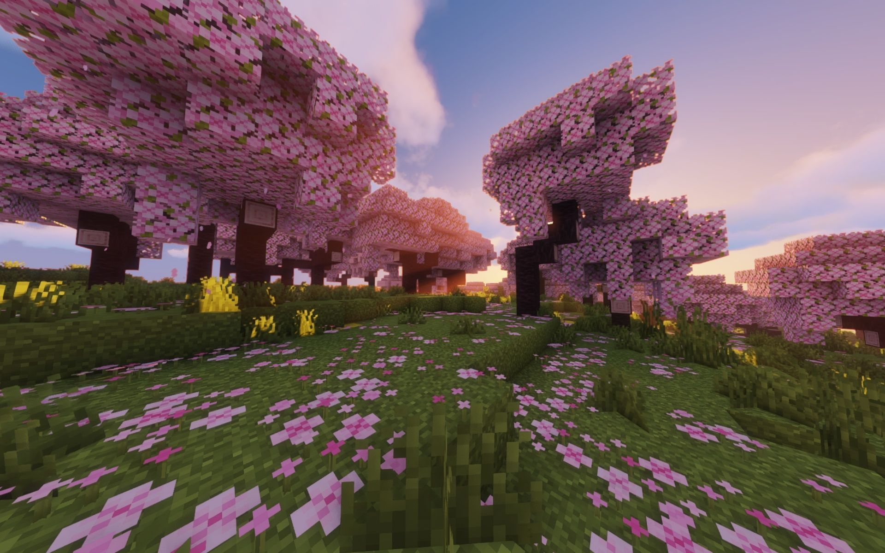
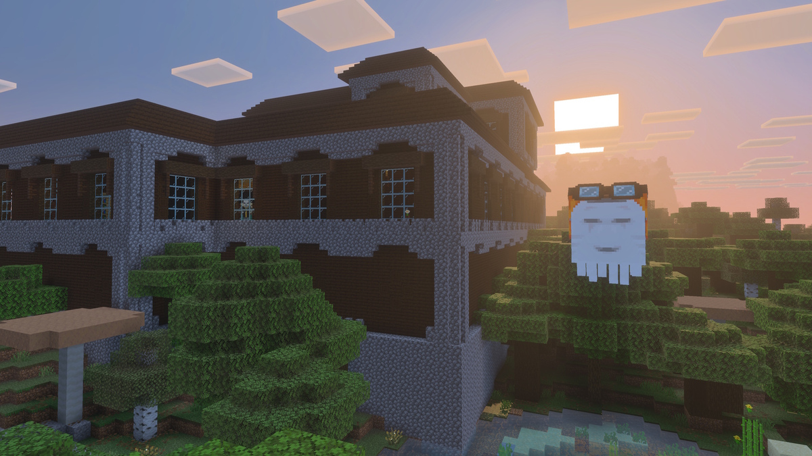
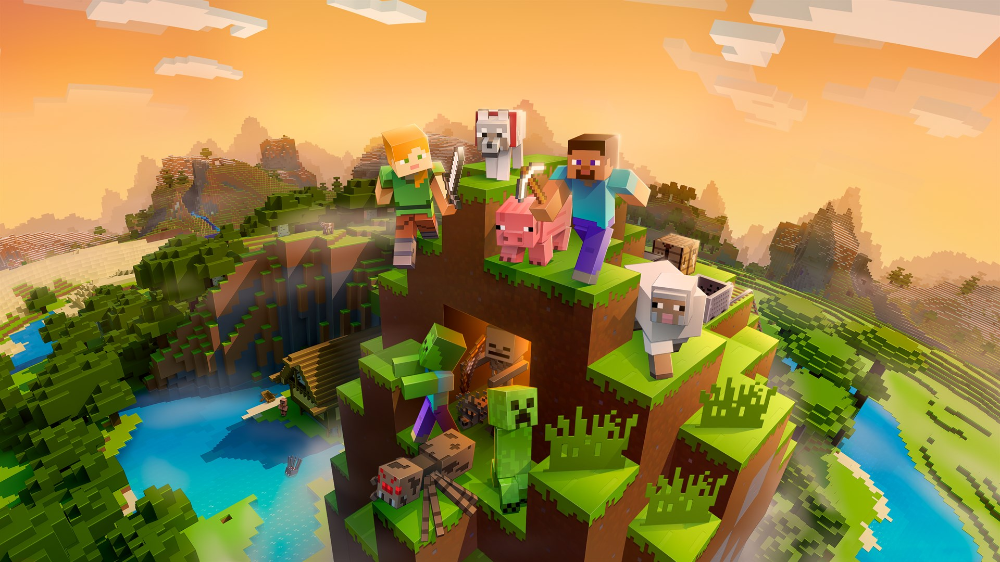

Bienvenido a Trinity Launcher
Un launcher open source para Minecraft Bedrock con la capacidad de gestionar múltiples instancias, mundos, texturas y mods. Enfocado en la libertad del usuario y redistribución gratuita.

Gestor de Instancias
Administra múltiples versiones de Minecraft Bedrock de forma organizada y eficiente.

Gestor de Mods
Instala, activa y gestiona mods y add-ons para personalizar tu experiencia de juego.

Gestor de Recursos
Organiza paquetes de texturas, sonidos y recursos para transformar la apariencia del juego.
Características Principales
Rendimiento Rápido
Optimizado para velocidad y eficiencia en todas las operaciones de gestión de Minecraft Bedrock en Linux.
Fácil de Usar
Interfaz intuitiva diseñada pensando en la experiencia del usuario, sin complicaciones técnicas.
Personalizable
Configura todo a tu gusto con opciones flexibles de customización y gestión de contenido.